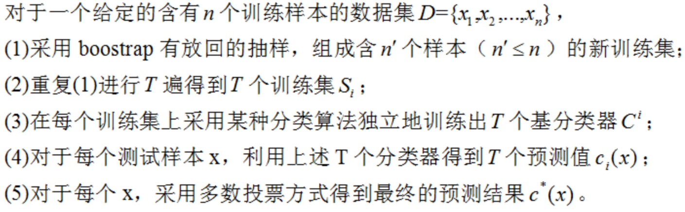
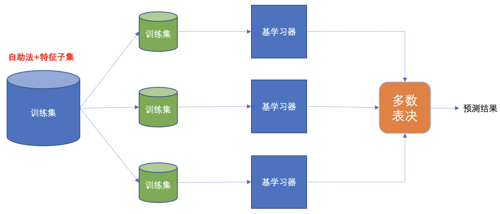

Bagging 和随机森林¶
学习目标¶
- 知道Bagging算法的基本原理
- 掌握sklearn中随机森林API的使用方法
1. Bagging 框架¶
1.1 算法引入¶
Baggging 框架通过有放回的抽样产生不同的训练集，从而训练具有差异性的弱学习器，然后通过平权投票、多数表决的方式决定预测结果。

例子：
目标：把下面的圈和方块进行分类

1) 采样不同数据集

2)训练分类器

3)平权投票，获取最终结果

4)主要实现过程小结

Bagging 使用 bootstrap 采样, 会存在大约 ⅓ 左右的数据未被选中用于训练弱学习，这部分未被选中的数据被称为 oob（out of bag）, 即：包外估计数据集。
1.2 booststrap抽样¶
在样本集D（样本数为m）内有放回的抽样，抽取数为m，每次抽取的概率相等为1/m，可能重复抽取。 原数据集D中36.8%的样本没有出现在采样数据集D1中。 我们可以使用D1作为训练集，D-D1作为测试集。这样实际评估的模型与期望的模型都使用m个训练样本，而我们仍有数据总量的⅓的，没有在训练集中出现的样本用于测试。


OOB 数据集可以作为验证集，用来辅助树的剪枝、或者评估树泛化能力。
1.3 算法总结¶

Bagging基本流程：通过上述自助采样，采出T个含m个训练样本的采样集，然后基于每个采样集训练出一个基学习器，在将这些基学习器进行组合。
在对预测输出进行结合的时候，Bagging通常对分类任务使用简单投票法，对回归任务进行简单的平均法。但是如果投票个数一致，则最简单的做法是随机选择一个类别，当然也可以进一步考察学习器投票的置信度来确定最终的分类。

基本分类器可以是决策树，逻辑回归等基分类器。
对于稳定性不好的分类器很实用，通过多数投票，减小了泛化误差，而对于稳定的分类器，集成效果并不明显。
1.4 Bagging性能¶
（1）Bagging是一个很高效的集成学习算法
（2）Bagging与下面讲的AdaBoost只适用于二分类不同，它能不经修改地用于多分类、回归任务。
（3）自助bootstrap采样过程还给Bagging带来了另一个优点：由于每个基学习器只使用了初始训练集中约63.2%的样本，剩下的约36.8%样本可用作验证集来泛化性能进行“包外样本评估（即：不同于训练数据的样本）”。
（4）从偏差-方差分解角度看，Bagging主要关注降低方差，因此他在不剪枝决策树、神经网络等易受样本扰动的学习器上效果更为明显。
1.5 Bagging算法总结¶
Bagging算法首先采用M轮自助采样法，获得M个包含N个训练样本的采样集。然后，基于这些采样集训练出一个基学习器。最后将这M个基学习器进行组合。组合策略为：
-
分类任务采用简单投票法：即每个基学习器一票
-
回归问题使用简单平均法：即每个基学习器的预测值取平均值
2. 随机森林¶
随机森林是基于 Bagging 思想实现的一种集成学习算法，它采用决策树模型作为每一个基学习器。其构造过程：
- 训练：
- 有放回的产生训练样本
- 随机挑选 n 个特征（n 小于总特征数量）
- 预测：平权投票，多数表决输出预测结果

2.1 算法总结¶
集成学习分类之随机森林的步骤

如上图：
首先，对样本数据进行有放回的抽样，得到多个样本集。具体来讲就是每次从原来的N个训练样本中有放回地随机抽取m个样本(包括可能重复样本)。
然后，从候选的特征中随机抽取k个特征，作为当前节点下决策的备选特征，从这些特征中选择最好地划分训练样本的特征。用每个样本集作为训练样本构造决策树。单个决策树在产生样本集和确定特征后，使用CART算法计算，不剪枝。
最后，得到所需数目的决策树后，随机森林方法对这些树的输出进行投票，以得票最多的类作为随机森林的决策。
说明：
（1）随机森林的方法即对训练样本进行了采样，又对特征进行了采样，充分保证了所构建的每个树之间的独立性，使得投票结果更准确。
（2）随机森林的随机性体现在每棵树的训练样本是随机的，树中每个节点的分裂属性也是随机选择的。有了这2个随机因素，即使每棵决策树没有进行剪枝，随机森林也不会产生过拟合的现象。
随机森林中有两个可控制参数：
-
森林中树的数量（一般选取值较大）
-
抽取的属性值m的大小。
思考
- 为什么要随机抽样训练集？
如果不进行随机抽样，每棵树的训练集都一样，那么最终训练出的树分类结果也是完全一样。
- 为什么要有放回地抽样？
如果不是有放回的抽样，那么每棵树的训练样本都是不同的，都是没有交集的，这样每棵树都是“有偏的”，都是绝对“片面的”（当然这样说可能不对），也就是说每棵树训练出来都是有很大的差异的；而随机森林最后分类取决于多棵树（弱分类器）的投票表决。
2.2 随机深林 API¶
sklearn.ensemble.RandomForestClassifier()
n_estimators：决策树数量，(default = 10)
Criterion：entropy、或者 gini, (default = gini)
max_depth：指定树的最大深度，(default = None 表示树会尽可能的生长)
max_features="auto”, 决策树构建时使用的最大特征数量
- If "auto", then
max_features=sqrt(n_features). - If "sqrt", then
max_features=sqrt(n_features)(same as "auto"). - If "log2", then
max_features=log2(n_features). - If None, then
max_features=n_features.
bootstrap：是否采用有放回抽样，如果为 False 将会使用全部训练样本，(default = True)
min_samples_split： 结点分裂所需最小样本数，(default = 2)
- 如果节点样本数少于min_samples_split，则不会再进行划分.
- 如果样本量不大，不需要设置这个值.
- 如果样本量数量级非常大，则推荐增大这个值.
min_samples_leaf： 叶子节点的最小样本数，(default = 1)
- 如果某叶子节点数目小于样本数，则会和兄弟节点一起被剪枝.
- 较小的叶子结点样本数量使模型更容易捕捉训练数据中的噪声.
min_impurity_split: 节点划分最小不纯度
- 如果某节点的不纯度(基尼系数，均方差)小于这个阈值，则该节点不再生成子节点，并变为叶子节点.
- 一般不推荐改动默认值1e-7。
上面决策树参数中最重要的包括
- 最大特征数 max_features，
- 最大深度 max_depth，
- 节点最少样本数 min_samples_split
- 叶子节点最少样本数: min_samples_leaf。
5.4 随机森林的Sklearn实战¶
这里使用泰坦尼克号案例实战：
#1.数据导入
#1.1导入数据
import pandas as pd
#1.2.利用pandas的read.csv模块从互联网中收集泰坦尼克号数据集
titanic=pd.read_csv("data/泰坦尼克号.csv")
titanic.info() #查看信息
#2人工选择特征pclass,age,sex
X=titanic[['Pclass','Age','Sex']]
y=titanic['Survived']
#3.特征工程
#数据的填补
X['Age'].fillna(X['Age'].mean(),inplace=True)
X = pd.get_dummies(X)
#数据的切分
from sklearn.model_selection import train_test_split
X_train, X_test, y_train, y_test =train_test_split(X,y,test_size=0.25,random_state=22)
#4.使用单一的决策树进行模型的训练及预测分析
from sklearn.tree import DecisionTreeClassifier
dtc=DecisionTreeClassifier()
dtc.fit(X_train,y_train)
dtc_y_pred=dtc.predict(X_test)
dtc.score(X_test,y_test)
#5.随机森林进行模型的训练和预测分析
from sklearn.ensemble import RandomForestClassifier
rfc=RandomForestClassifier(max_depth=6,random_state=9)
rfc.fit(X_train,y_train)
rfc_y_pred=rfc.predict(X_test)
rfc.score(X_test,y_test)
#6.性能评估
from sklearn.metrics import classification_report
print("dtc_report:",classification_report(dtc_y_pred,y_test))
print("rfc_report:",classification_report(rfc_y_pred,y_test))
超参数选择代码:
# 随机森林去进行预测
# 1 实例化随机森林
rf = RandomForestClassifier()
# 2 定义超参数的选择列表
param={"n_estimators":[80,100,200], "max_depth": [2,4,6,8,10,12],"random_state":[9]}
# 超参数调优
# 3 使用GridSearchCV进行网格搜索
from sklearn.model_selection import GridSearchCV
gc = GridSearchCV(rf, param_grid=param, cv=2)
gc.fit(X_train, y_train)
print("随机森林预测的准确率为：", gc.score(X_test, y_test))
3. 小结¶
- Bagging 通过自助法进行采样并用于训练弱学习器，最后采用平权投票方式决定未知样本的最后预测
- 随机森林通过自助法、特征采样方法训练弱学习器，最后采用平权投票方式决定未知样本的最后预测